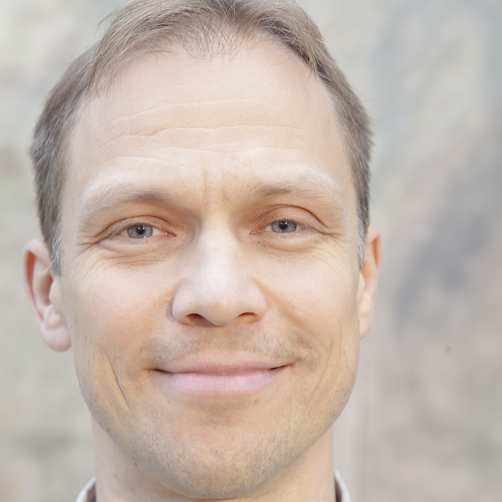

Terapeutit
Erja Dammert
psykoterapeutti (Valvira, Kela)
040 839 0350 / suomi, svenska, english
sähköposti: dammerterja@gmail.com
vastaanotto: Unioininkatu 7, Helsinki
Katja Kiuru-Miller
psykoterapeutti (Valvira)
050 352 4739 / suomi, english
sähköposti: katjakiuru@gmail.com
vastaanotto: Helsinki
Tiina Nuto
psykoterapeutti(Kela),vaativa lääkinnäll.
kuntoutus
045 173 8920 / suomi, english, español
sähköposti: tmnuto@yahoo.com
vastaanotto: Helsinki
Jan Pesonen
psykoterapeutti (Valvira, Kela),
työnohjaaja
044 591 3444 / suomi, english
sähköposti: info@kehopsyko.fi
vastaanotto: Pohj. Rautatiekatu 11 A 5b, 00100 Helsinki
» www.kehopsyko.fi